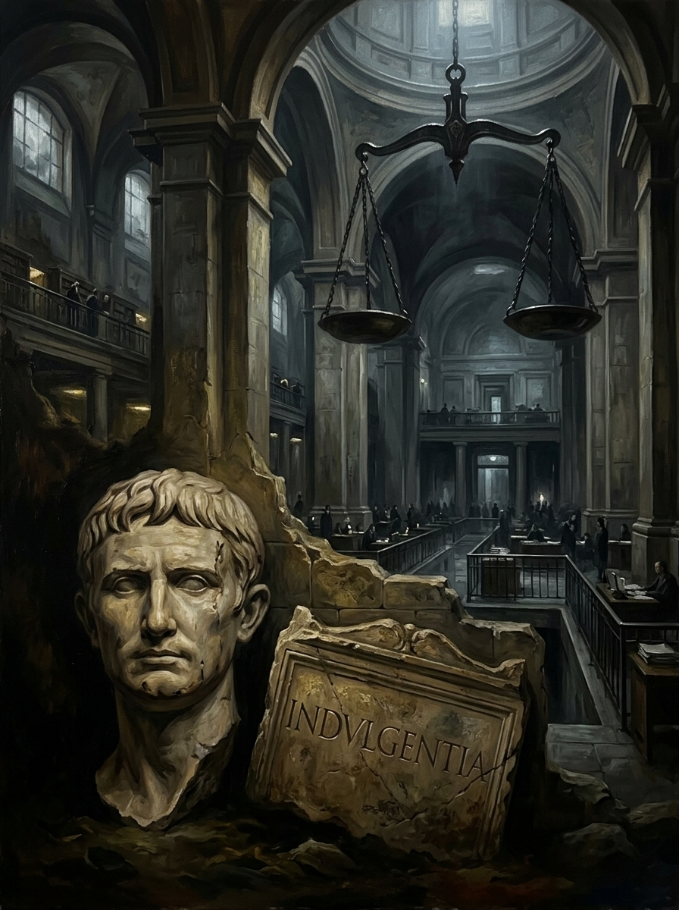

Un fraile llega a un pueblo alemán con un cofre reforzado co...
n hierro y una promesa: en cuanto tu moneda suene ahí dentro

La palabra detrás de todo esto, indulgentia, no nació cristi...
ana: era latín romano para la clemencia que un emperador con